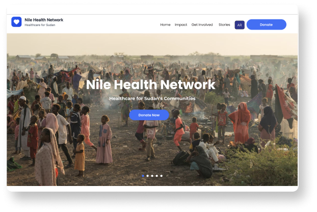
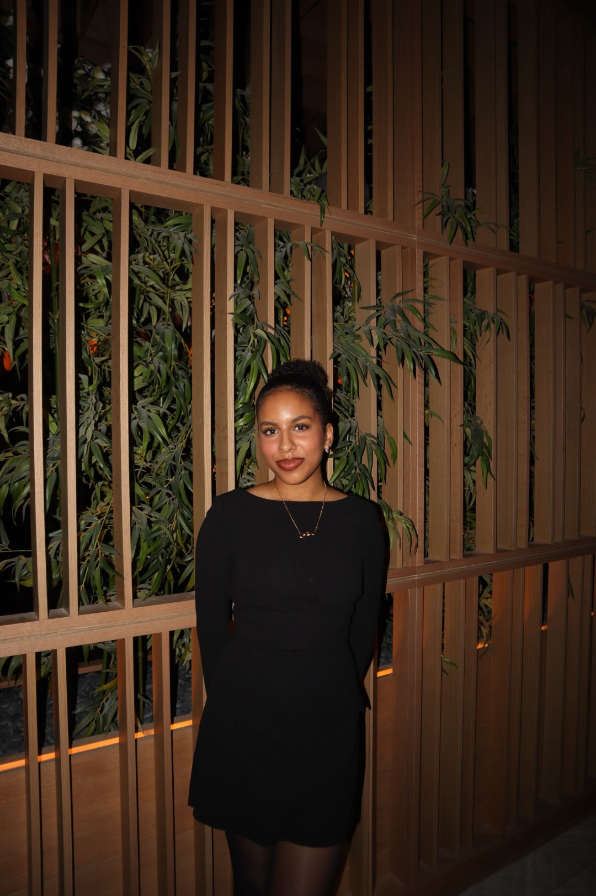
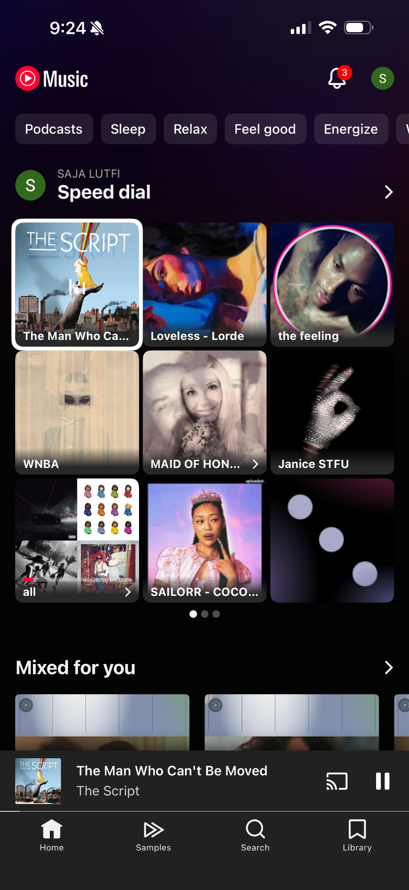
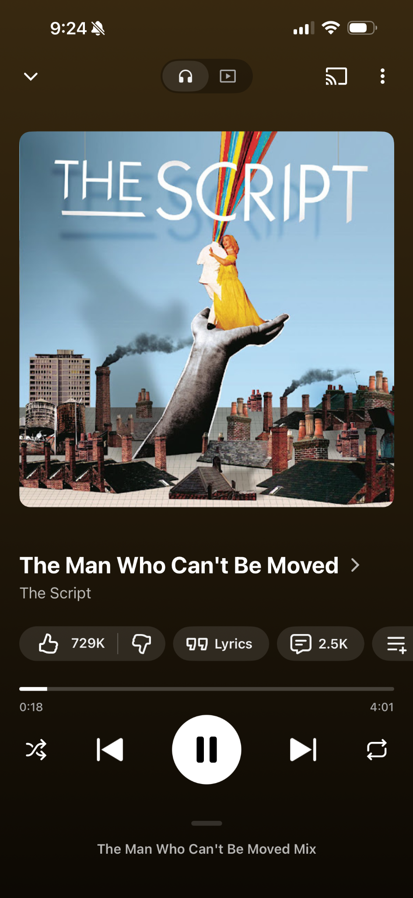

Class project · Bilingual prototype
Nile Health Network
Exploring trust, storytelling, and English–Arabic access for a nonprofit website concept.
I’m an HCI graduate student who uses research and design to make digital experiences easier for people to use.
View my work

Exploring trust, storytelling, and English–Arabic access for a nonprofit website concept.
A graduate team project exploring internal reports and dashboards in Agricultural Lending.


Listening parties for friends studying, working out, or spending time apart.
I’m looking for UX design and research opportunities. I’d love to hear from you.
saja2004.lutfi@gmail.com